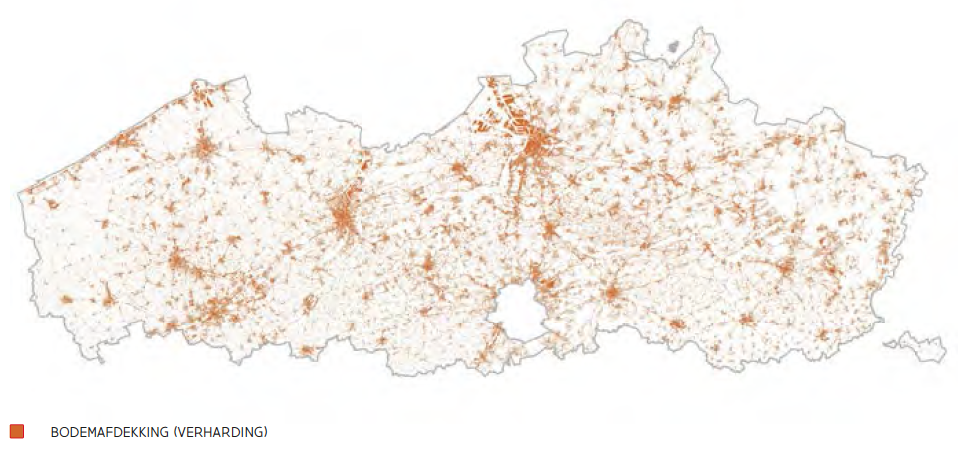
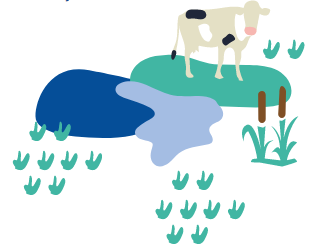
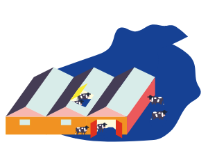
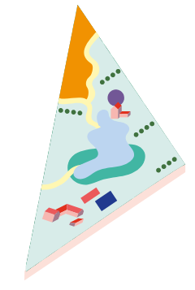

Grondwater is een waardevolle reserve van water met een goede kwaliteit voor wanneer het niet voldoende regent om aan de watervraag te voldoen. Jammer genoeg is Vlaanderen een kampioen in verharding. Maar liefst 16 % van onze oppervlakte is verhard (in steden vaak > 35%), waardoor regenwater snel afgevoerd wordt via rioleringen en niet kan infiltreren in de bodem en naar de grondwaterreserves. In het verleden lag de focus van het waterbeheer ook eerder in het snel afvoeren van een teveel aan water dan in het opsloen of bufferen ervan. Er gaat dus heel wat water verloren via riolering, beken en drainages.
Wat kunnen we doen om meer water 'vast' te houden?
Het is fundamenteel om te werken rond verharding en verstedelijking. ILVO - L&M werkt alvast rond twee thema’s:
Contact: Anna VERHOEVE en Miro JACOB (L&M)
Om water op te slaan moet het een plaats krijgen in het landschap. Op vele plaatsen is het landschap dermate verstedelijkt en ingevuld met industrie en landbouwfuncties dat er te weinig plaats overblijft waar water aanwezig kan blijven. In de eerste plaats denken we daarbij aan natuur, maar ook de landbouwer zou hier een meer prominente rol kunnen spelen als 'waterboer' of 'waterhouderij'. Met andere woorden, de landbouwer in het natte gebied produceert dan niet alleen voedsel. Hij is ook een waterbufferaar. Vanuit de Pilootprojecten Productief Landschap (Vlaamse Bouwmeester) weten we alvast dat een belangrijk knelpunt hiervoor is het gebrek aan instrument: de financiering van blauwe diensten.
Contact: Elke VANEMPTEN (L&M)
Een individueel landbouwbedrijf kan natuurlijk maximaal inzetten op hergebruik van water. Zo moet spoelwater voor de stallen niet dezelfde kwaliteit hebben als drinkwater voor de dieren. Maar dit kan ook op landschapsniveau gezien worden. Hier wordt eigenlijk de grootste zwakte van Vlaanderen (sterke verstedelijking) zijn grootste sterkte. De nabijheid van de stad wordt voor vele landbouwers meteen een kans. Dit vraagt om andere blik op de stad: ze is niet alleen consument maar ook producent van grondstoffen als we de zaken meer circulair bekijken. Het is dus belangrijk dat watergebruikers elkaar vinden en hun lokale waterkansen in kaart brengen en in uitvoering brengen. Duurzaam waterbeheer doe je zelden alleen! Bij water hergebruik moet wel erg voorzichtig omgegaan worden met de impact van het 'grijs' water op de omgeving op korte en zeker ook op lange termijn (risico's op verzouting, micropolluenten , verhoogde hydrofobiciteit, ...)
Binnen het programma WATER+LAND+SCHAP helpt ILVO 'lokale coalities' om samen plannen te maken en uit te voeren voor een klimaatrobuust waterlandschap. De Mechelse groentenregio is één van de voorbeelden.
Contact: Els BELMANS (L&M), Sarah GARRE (ELK) en Tom DE SWAEF (PLANT)
